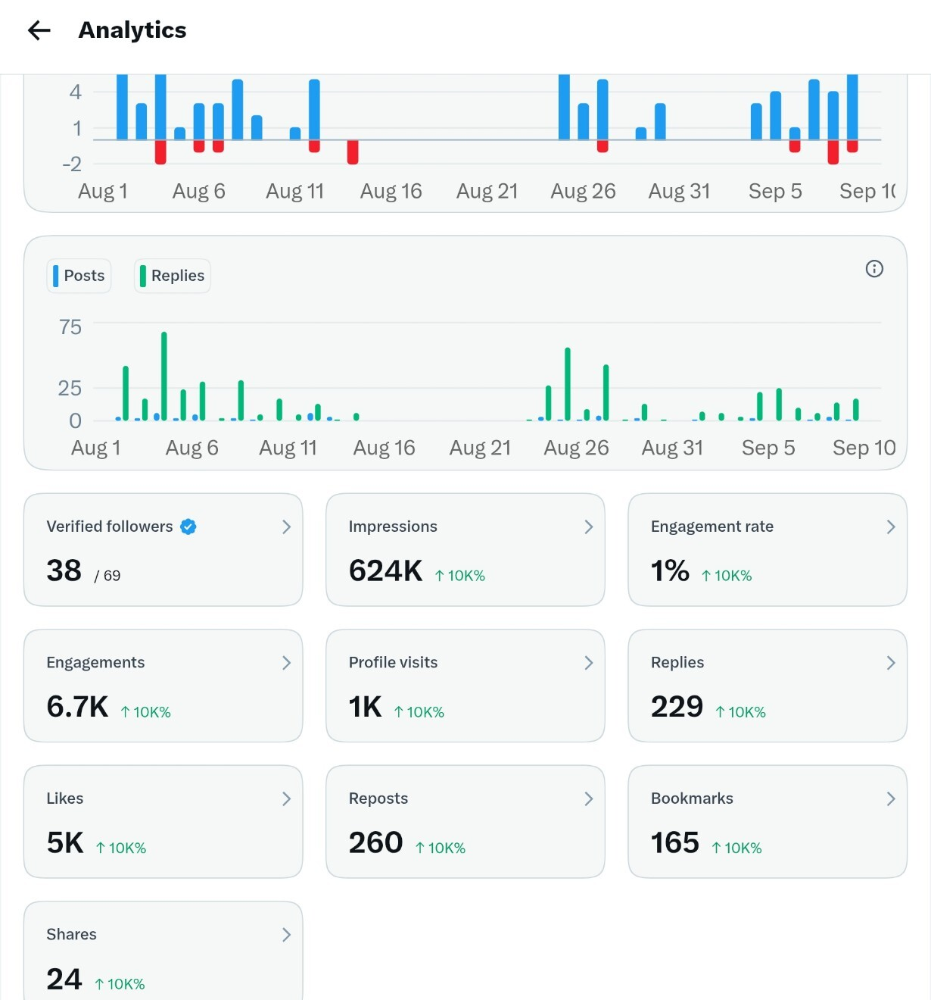

Video · X
A tiny mistake that weakens product trust
The opening names the audience, creates a specific risk and demonstrates the point instead of simply explaining it.
Content work
I create original content for AI audiences and join relevant conversations with a reason—not just to be seen, but to bring the right people closer to the work.
Original content
A short video showing how one small copy mistake can make a product feel less trustworthy. I developed the angle, wrote the script and edited the final piece.
Video · X
The opening names the audience, creates a specific risk and demonstrates the point instead of simply explaining it.

Recognition
I published a practical thread about saving money on flights with ChatGPT. OpenAI later asked to republish it for its Instagram audience—with credit.
The point was not a polished brand mention. It was a genuinely useful explanation that a larger platform wanted to carry further.
Strategic replies
I identify live AI conversations where a concise, timely contribution can add something people want to react to—and give interested readers a reason to visit the profile behind it.
Recent analytics
These figures cover the analytics window shown—not a lifetime total. The replies above are examples of the participation that contributed to that visibility.

Content with a job to do
I’m open to remote content roles and collaborations with AI and technology teams.
Start a conversation